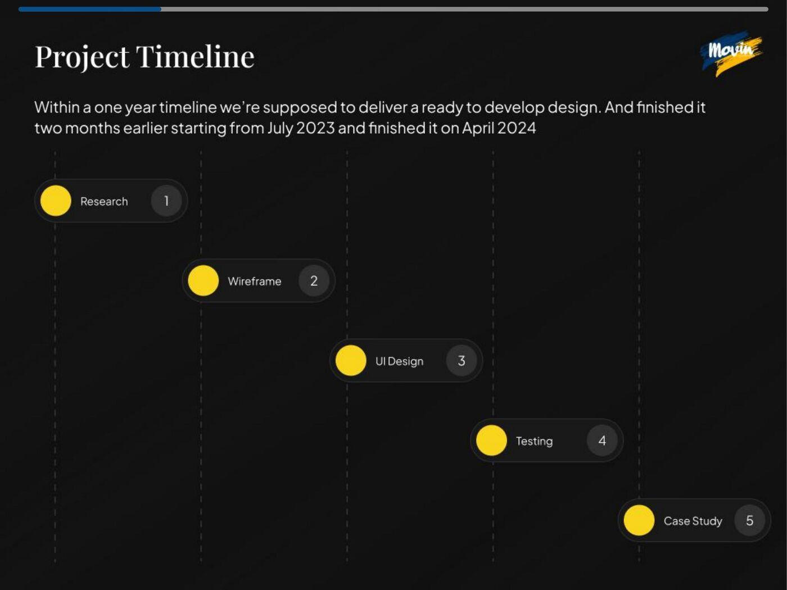
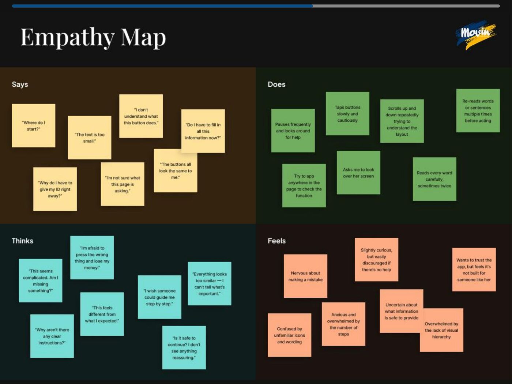
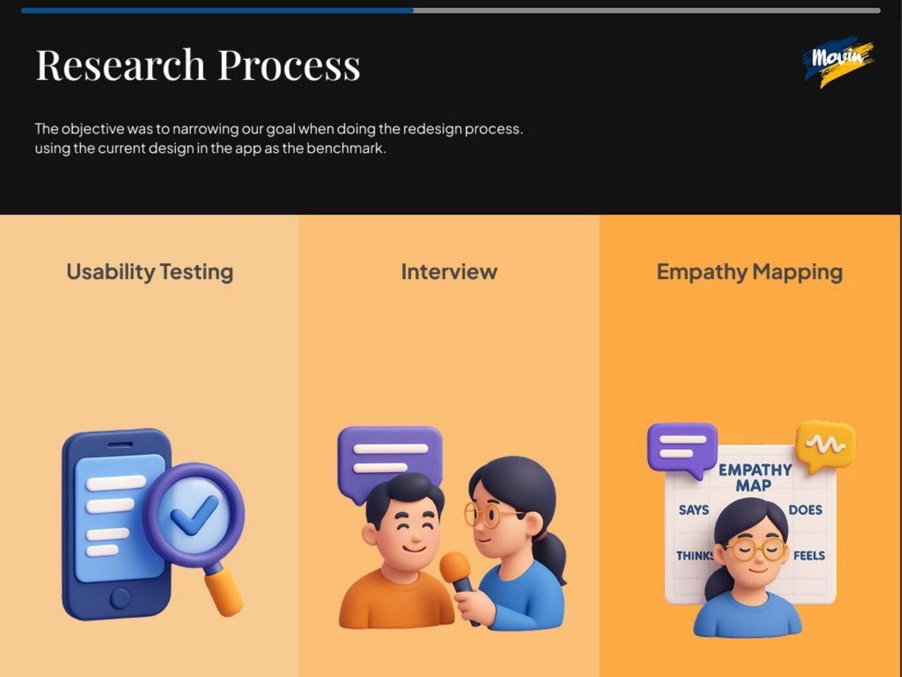
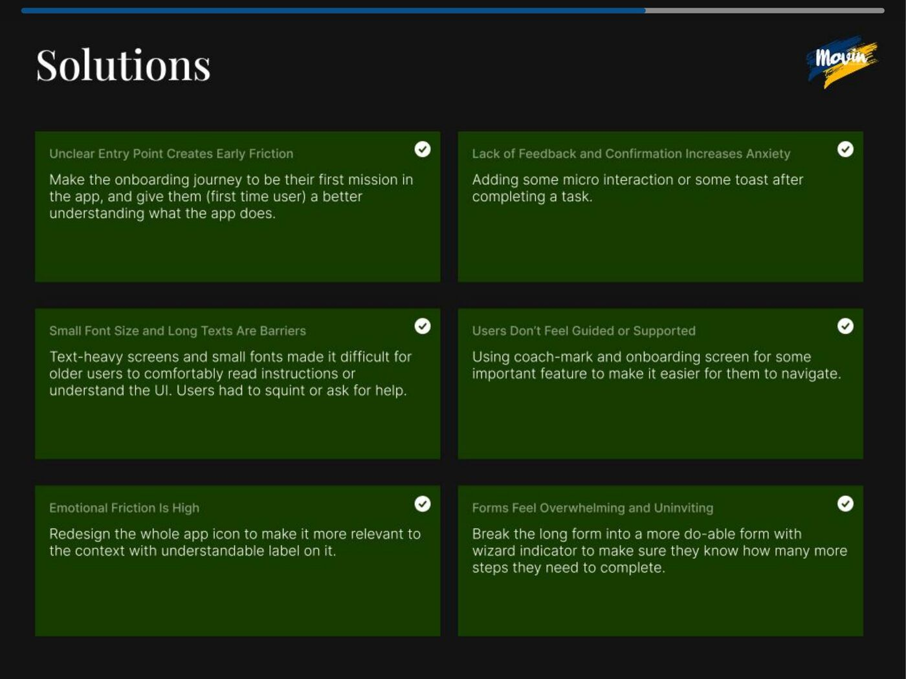
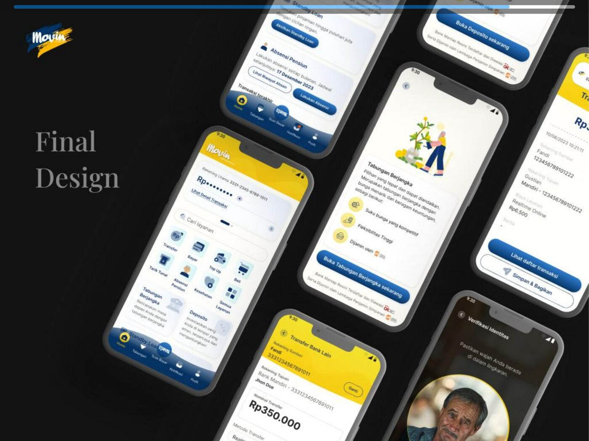

Rebuilding digital banking for Indonesia's small business owners

Mandiri Taspen's mobile banking app (Movin) serves pensioners and MSME owners across Indonesia. The app had a 3.2 star rating on the app store and users were struggling with basic tasks like e-wallet top-ups, bill payments, and transfers. The target users skew older, less tech-savvy, and more cautious about digital financial transactions.
I was brought in on a 10-month contract to redesign the core banking experience and establish a visual identity system. The timeline was originally one year, but we delivered two months early.

We started with usability testing and interviews using the existing app as a benchmark. The findings were revealing. Users were afraid of pressing the wrong button and losing money. Text was too small for older eyes. Buttons all looked the same, so users couldn't tell what was important. Forms felt overwhelming with no clear progress indication.
I synthesized these findings into an empathy map that became our north star for every design decision.


Based on research, we identified six core issues and designed targeted solutions for each. Unclear entry points got a redesigned onboarding journey. Missing feedback and confirmation got micro-interactions and toast notifications. Small fonts became larger, clearer typography. Unguided navigation got coach marks and onboarding screens. Emotional friction got a redesigned app icon. Overwhelming forms were broken into wizard-style steps with progress indicators.

The final design overhauled the home screen, transfer flows, bill payments, savings products, and identity verification. Every screen was designed with larger touch targets, clearer hierarchy, and confirmation states that reassure users after each action. I also created illustration guidelines and micro-interaction specs to maintain visual consistency across 50+ screens.
